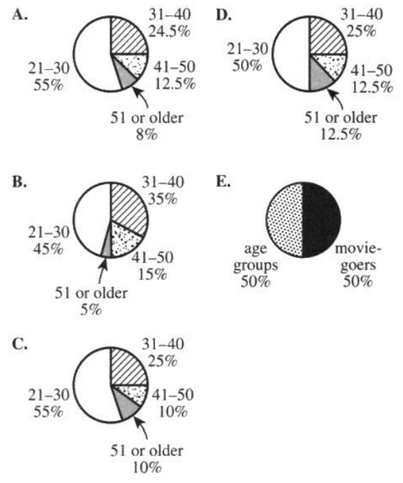

If there is one prayer that you should pray/sing every day and every hour, it is the
LORD's prayer (Our
FATHER in Heaven prayer)
It is the most powerful prayer.
A pure heart, a clean mind, and a clear conscience is necessary for it.
- Samuel Dominic Chukwuemeka
For in GOD we live, and move, and have our being. - Acts 17:28
The Joy of the Teacher is the Success of the Students.. - Samuel
Chukwuemeka
For ACT Students
The ACT is a timed exam...$60$ questions for $60$ minutes
This implies that you have to solve each question in one minute.
Some questions will typically take less than a minute a solve.
Some questions will typically take more than a minute to solve.
The goal is to maximize your time. You use the time saved on those questions you
solved in less than a minute, to solve the questions that will take more than a minute.
So, you should try to solve each question correctly and timely.
So, it is not just solving a question correctly, but solving it correctly on time.
Please ensure you attempt all ACT questions.
There is no negative penalty for any wrong answer.
For SAT Students
Any question labeled SAT-C is a question that allows a calculator.
Any question labeled SAT-NC is a question that does not allow a calculator.
For JAMB Students
Calculators are not allowed. So, the questions are solved in a way that does not require a calculator.
For WASSCE Students
Any question labeled WASCCE is a question for the WASCCE General Mathematics
Any question labeled WASSCE-FM is a question for the WASSCE Further Mathematics/Elective Mathematics
For NSC Students For the Questions:
Any space included in a number indicates a comma used to separate digits...separating multiples of three digits
from behind.
Any comma included in a number indicates a decimal point. For the Solutions:
Decimals are used appropriately rather than commas
Commas are used to separate digits appropriately.
Solve all questions.
Show all work.
(1.) WASSCE
Marks
$1$
$2$
$3$
$4$
$5$
Number of students
$m + 2$
$m - 1$
$2m - 3$
$m + 5$
$3m - 4$
The table shows the distribution of marks scored by some students in a test.
(1.) If the mean mark is $3\dfrac{6}{23}$, find the value of $m$
(2.) Find the:
(i) inter-quartile range;
(ii) probability of selecting a student who scored at least $4$ marks in the test.
$
n = sample\;\;size = 8 \\[3ex]
\Sigma x = 1.20 + 1.00 + 0.90 + 1.40 + 0.80 + 0.80 + 1.20 + 1.10 \\[3ex]
= 8.4 \\[3ex]
\underline{Mean} \\[3ex]
m = \bar{x} = \dfrac{\Sigma x}{n} \\[5ex]
= \dfrac{8.4}{8} \\[5ex]
= 1.05 \\[3ex]
\underline{Range} \\[3ex]
minimum = 0.20 \\[3ex]
maximum = 1.40 \\[3ex]
r = Range = maximum - minimum \\[3ex]
= 1.40 - 0.80 \\[3ex]
= 0.6 \\[3ex]
m + r \\[3ex]
= 1.05 + 0.6 \\[3ex]
= 1.65
$
(3.) NSC In the grid below a, b, c, d, e, f and g represent values in a data set
written in an increasing
order.
No value in the data set is repeated.
$a$
$b$
$c$
$d$
$e$
$f$
$g$
Determine the value of $a, b, c, d, e, f$ and $g$ if:
The maximum value is $42$
The range is $35$
The median is $23$
*The difference between the median and the upper quartile is $14$ (improper way as it was
written in the past question)*
The difference between the upper quartile and the median is $14$ (proper way to write it, so
please write it as this)
The interquartile range is $22$
$e = 2c$
The mean is $25$
Increasing order means Ascending order
It means that the values are ordered from least to greatest
This means that $a$ is the least and $g$ is the greatest
$
\underline{First\:\:Point} \\[1em]
max = g = 42 \\[1em]
\underline{Second\:\:Point} \\[1em]
range = max - min \\[1em]
35 = 42 - min \\[1em]
min = 42 - 35 \\[1em]
min = 7 \\[1em]
a = min \\[1em]
a = 7 \\[1em]
\underline{Third\:\:Point} \\[1em]
n = 7 \\[1em]
median = middle = Q_2 = 4th\:\:position = d \\[1em]
23 = Q_2 = d \\[1em]
d = Q_2 = 23 \\[1em]
\underline{Fourth\:\:Point} \\[1em]
Q_3 - Q_2 = 14 \\[1em]
Q_3 = 75th\:\:percentile\:\:of\:\:n \\[1em]
= \dfrac{75}{100} * 7 \\[2em]
= 0.75 * 7 \\[1em]
= 5.25th\:position...not\:\:an\:\:integer...round\:\:up \\[1em]
= 6th\:position \\[1em]
= f \\[1em]
Q_3 = f \\[1em]
\implies f - 23 = 14 \\[1em]
f = 14 + 23 \\[1em]
f = 37 \\[1em]
\underline{Fifth\:\:Point} \\[1em]
IQR = Q_3 - Q_1 \\[1em]
22 = 37 - Q_1 \\[1em]
Q_1 = 37 - 22 \\[1em]
Q_1 = 15 \\[1em]
Also \\[1em]
Q_1 = 25th\:\:percentile\:\:of\:\:n \\[1em]
= \dfrac{25}{100} * 7 \\[2em]
= 0.25 * 7 \\[1em]
= 1.75th\:position...not\:\:an\:\:integer...round\:\:up \\[1em]
= 2nd\:position \\[1em]
= b \\[1em]
Q_1 = b = 15 \\[1em]
b = 15 \\[1em]
\underline{Sixth\:\:Point} \\[1em]
e = 2c...eqn.(1) \\[1em]
\underline{Seventh\:\:Point} \\[1em]
\bar{x} = 25 \\[1em]
\bar{x} = \dfrac{\Sigma x}{n} \\[2em]
\Sigma x = a + b + c + d + e + f + g \\[1em]
\Sigma x = 7 + 15 + c + 23 + e + 37 + 42 \\[1em]
\Sigma x = 124 + c + e \\[1em]
Substitute\:\:e = 2c...from\:\:eqn.(1) \\[1em]
\Sigma x = 124 + c + 2c \\[1em]
\Sigma x = 124 + 3c \\[1em]
\implies 25 = \dfrac{124 + 3c}{7} \\[2em]
25(7) = 124 + 3c \\[1em]
175 = 124 + 3c \\[1em]
124 + 3c = 175 \\[1em]
3c = 175 - 124 \\[1em]
3c = 51 \\[1em]
c = \dfrac{51}{3} \\[2em]
c = 17 \\[1em]
e = 2c = 2(17) \\[1em]
e = 34 \\[1em]
$
The completed grid is:
$7$
$15$
$17$
$23$
$34$
$37$
$42$
The numbers are in ascending order.
None of the values are repeated.
(4.) WASSCE The table below shows the number of children per family in a community.
Number of children
$0$
$1$
$2$
$3$
$4$
$5$
Number of families
$3$
$5$
$7$
$4$
$3$
$2$
(a.) Find the:
(i) mode
(ii) third quartile
(iii) probability that a family has at least $2$ children
(b.) If a pie chart were to be drawn for the data, what would be the sectorial angle representing
families with one child?
(a.)
Number of children are the data values, $x$
Number of families are the frequencies, $f$
(i)
The mode is the number of children in the highest number of families
Highest number of families is $7$
The number of children in $7$ families is $2$
$Mode = 2$
The table shows the distribution of marks scored by students in an examination.
Calculate, correct to 2 decimal places, the
(a.) mean
(b.) standard deviation of the distribution.
(a.)
$
Mean = \dfrac{\Sigma fx_{mid}}{\Sigma f} \\[5ex]
$
Class Interval, $x$
Class Midpoint, $x_{mid}$
Frequency, $f$
$f * x_{mid}$
$60-64$
$\dfrac{60 + 64}{2} = \dfrac{124}{2} = 62$
$2$
$124$
$65-69$
$\dfrac{65 + 69}{2} = \dfrac{134}{2} = 67$
$3$
$201$
$70-74$
$\dfrac{70 + 74}{2} = \dfrac{144}{2} = 72$
$6$
$432$
$75-79$
$\dfrac{75 + 79}{2} = \dfrac{154}{2} = 77$
$11$
$847$
$80-84$
$\dfrac{80 + 84}{2} = \dfrac{164}{2} = 82$
$8$
$656$
$85-89$
$\dfrac{85 + 89}{2} = \dfrac{174}{2} = 87$
$7$
$609$
$90-94$
$\dfrac{90 + 94}{2} = \dfrac{184}{2} = 92$
$2$
$184$
$95-99$
$\dfrac{95 + 99}{2} = \dfrac{194}{2} = 97$
$1$
$97$
$\Sigma f = 40$
$\Sigma fx_{mid} = 3150$
$
\bar{x} \\[3ex]
= \dfrac{\Sigma fx_{mid}}{\Sigma f} \\[5ex]
= \dfrac{3150}{40} \\[5ex]
= 78.75 \\[3ex]
$
(b.)
There are two methods/formulas to solve this question.
Use any method you prefer.
(6.) curriculum.gov.mt These are the marks that Stephanie scored in her Maths tests:
68, 58, 61, 75, 63.
These are the marks that Stephanie scored in her Science tests:
81, 77, 68, 76.
(a.) Complete the following table:
Mean
Median
Range
Maths
Science
(b.) In which subject did Stephanie do better, Maths or Science?
Give a reason for your answer.
$
Average\;\;number\;\;of\;\;moviegoers \\[3ex]
= \dfrac{830 + 1650 + 2320 + 200}{4} \\[5ex]
= \dfrac{5000}{4} \\[5ex]
= 1,250 \\[3ex]
$
The average number of moviegoers for each of the 4 categories is 1,250 moviegoers.
(8.) Suppose all the adults surveyed happened to attend 1 movie each in one particular week.
The total amount spent on tickets by those surveyed in that week was $44,000.00
How many adults attended matinees that week?
Let the adults that attended:
regular showings = x
matinees = y
A large theater complex surveyed 5,000 adults.
$
x + y = 5000 ...eqn.(1) \\[3ex]
$
Tickets are $9.50 for all regular showings and $7.00 for matinees.
Suppose all the adults surveyed happened to attend 1 movie each in one particular week.
The total amount spent on tickets by those surveyed in that week was $44,000.00
(9.) One of the following circle graphs represents the proportion by age group of the adults surveyed.
Which one?

We have about a minute to solve this question.
So, we shall find the sectorial angle for the first age group and then use the process of
elimination to
identify our answer
If necessary, we shall find the sectorial angle for the second age group and also eliminate options
We shall repeat this process until we get our answer
$
Sectorial\;\;\angle\;\;for\;\;each\;\;age\;\;group =
\dfrac{frequency\;\;of\;\;the\;\;age\;\;group}{\Sigma f} * 100 \\[5ex]
\underline{21-30\;\;Age\;\;Group} \\[3ex]
Sectorial\;\;\angle = \dfrac{2750}{5000} * 100 \\[5ex]
= 55\% \\[3ex]
$
Eliminate Options B., D., and E.
Let us calculate the sectorial angle for the second age group
$
\underline{31-40\;\;Age\;\;Group} \\[3ex]
Sectorial\;\;\angle = \dfrac{1225}{5000} * 100 \\[5ex]
= 24.5\% \\[3ex]
$
Eliminate Option C.
Option A. is the correct answer.
For those who just want to complete the rest of the age groups
(14.) ACT An outlier is added to the data set below.
Which of the following pairs of statistics has no change in value as a result of the addition of the
outlier?
{60, 63, 66, 70, 72, 72, 73, 73, 73, 75} F. Mean and median G. Mean and mode H. Mean and range J. Median and mode K. Median and range
Usually, the median and the mode are statistical measures that are not affected by outliers
Be it as it may, let us explain using the dataset that was given to us.
The dataset is already sorted
Hence, any data value (outlier) added to the dataset is before 60 or after 75 because outliers are
extreme values
That outlier is not 60. It is not 75
But even if it is so (though it is not so); the median will not be affected
Presently, the median is 72 [(72 + 72) divided by 2...even sample size]
If an outlier is added, the median will still be 72...odd sample size
So, the median will not be affected
Presently, the mode is 73
If an outlier is added, the mode will still be 73
So, the median and the mode are not affected.
(15.) WASSCE-FM The table shows the distribution of marks obtained by students in an examination.
Marks
$50 - 54$
$55 - 59$
$60 - 64$
$65 - 69$
$70 - 74$
$75 - 79$
$80 - 84$
$85 - 89$
Frequency
$5$
$15$
$20$
$28$
$12$
$9$
$7$
$4$
Using an assumed mean (AM) of $67$, calculate, correct to one decimal place, the:
(a.) mean;
(b.) standard deviation;
of the distribution.
Check to make sure the grouped data has equal class intervals.
In other words, the class size must be the same for all the classes.
$AM = 67$
(20.) ACT Set A and Set B each consist of 5 distinct numbers.
The 2 sets contain identical numbers with the exception of the number with the least value in each set.
The number with the least value in Set B is greater than the number with the least value in Set A.
The value of which of the following measures must be greater for Set B than for Set A ? A. Mean only B. Median only C. Range only D. Mean and range only E. Mean, median, and range
Let us write Set A and Set B with numbers as elements of both sets (5 distinct numbers in each set),
making sure that the least
number in Set B is greater than the least number in Set A; while both sets have the same
four numbers.
In other words, 4 of the 5 numbers in both sets are the same while the remaining number
in Set B is greater than the remaining number in Set A.
Set A = {0, 2, 3, 4, 5}
Set B = {1, 2, 3, 4, 5}
$
\underline{Set\;A} \\[3ex]
A = \{0, 2, 3, 4, 5\} \\[3ex]
min = 0 \\[3ex]
max = 5 \\[3ex]
n = 5 \\[3ex]
\Sigma x = 0 + 2 + 3 + 4 + 5 = 14 \\[3ex]
mean = \dfrac{\Sigma x}{n} = \dfrac{14}{5} = 2.8 \\[5ex]
median = 3 \\[3ex]
range = max - min = 5 - 0 = 5 \\[5ex]
\underline{Set\;B} \\[3ex]
B = \{1, 2, 3, 4, 5\} \\[3ex]
min = 1 \\[3ex]
max = 5 \\[3ex]
n = 5 \\[3ex]
\Sigma x = 1 + 2 + 3 + 4 + 5 = 15 \\[3ex]
mean = \dfrac{\Sigma x}{n} = \dfrac{15}{5} = 3 \\[5ex]
median = 3 \\[3ex]
range = max - min = 5 - 1 = 4 \\[3ex]
$
Comparing Set A and Set B:
Mean of Set B is greater than mean of Set A
Median of Set B is the same as median of Set A
Range of Set B is less than range of Set A
Hence, based on the question we were asked, the only statistics of Set B that must be greater than
Set A is the Mean.
(24.) ACT Data from a random sample of 335 car owners in a certain city are listed below.
The table indicates the number of owners in 3 age brackets (16 - 25, 26 - 45, 46 - 60) who own cars from
3 car
companies (A, B, C) in this city.
Each owner in the sample owns only 1 car.
Car companies
Age (in years)
A
B
C
Total
16 - 25
26 - 45
46 - 60
16
54
65
24
48
23
40
53
12
80
155
100
Total
135
95
105
335
A circle graph will be drawn with 3 sectors each representing the proportion of owners from Company A,
B, and C who
are 16 to 25 years old.
What is the measure of the central angle for the Company A sector of the graph?
ACT Use the following information to answer questions 27-28.
A survey in a study skills class asked the 20 students enrolled in the class how many hours
(rounded to the nearest hour) they has spent studying on the previous evening.
The 20 responses are summarized by the histogram below.
(27.) The teacher decides to show the data in a circle graph (pie chart).
What should be the measure of the central angle of the sector for 3 hours?
$
\bar{x} = \dfrac{\Sigma fx}{\Sigma f} \\[5ex]
= \dfrac{42}{20} \\[5ex]
= 2.1
$
The average number of hours for the 20 survey responses is 2.1 hours
(29.)
(30.)
(31.)
(32.) ACT The marketing students at Fort Link Business Academy took a placement test for an
accounting class.
The mean of the test scores is 100 and the standard deviation is 15
In order to be accepted into the accounting class, a student must have attained a test score that is
at least 1 standard deviation above the mean.
What is the lowest score a student could attain and still be accepted into the accounting class?
$
A.\:\: 15 \\[3ex]
B.\:\: 16 \\[3ex]
C.\:\: 101 \\[3ex]
D.\:\: 115 \\[3ex]
E.\:\: 116 \\[3ex]
$
But guess what?
Can we paraphrase this question?
What if this question was worded like this?
To enroll in an accounting class, a student must make a test score of
at least $15$ more than the class average of $100$
What is the lowest score a student could attain and still be accepted into the accounting
class?
Do you see what I mean about lengthy word problems?
It is important you note the advice I gave about word problems
Mean = $100$
Standard deviation = $15$
$1$ standard deviation = $15$
$1$ standard deviation above the mean = $15 + 100 = 115$
at least $1$ standard deviation above the mean is $\ge 115$
This means $115, 116, 117, 118, ...$
The lowest score a student could attain and still be accepted into the accounting class is $115$
(33.)
(34.)
(35.)
(36.)
(37.)
(38.) ACT There are exactly 5 people in a bookstore at 12:00 p.m.
Each person earns an annual income that is between $30,000 and $35,000.
No one enters or leaves the bookstore until 12:15 p.m., when a professional athlete with an annual
income of more than $1,000,000 enters the bookstore and joins the other 5 people.
The mean, median, range, and standard deviation of the annual incomes of the 5 people in the bookstore
at 12:00 p.m. are calculated and compared to the same 4 statistics of the annual incomes of the 6 people
in the bookstore at 12:15 p.m.
If it can be determined, which of the 4 statistics changed the least? A. Range B. Mean C. Median D. Standard deviation E. Cannot be determined from the given information
The annual salaries of the 5 people at 12:00 pm is between $30,000 and
$35,000
The mean is a measure of center: which is between $30,000 and $35,000
The median is also a measure of measure which is between $30,000 and
$35,000
The range and the standard deviation will typically be less than $30,000
But then at 12:15 pm, an outlier of $1,000,000 is included in the data.
The mean will be highly affected...because it is not resistant to outliers.
The range and the standard deviation will also be highly affected.
The median will be the least affected because the 3rd and 4th data values (for a sample size of 6,
the median is the average of the 3rd and 4th data values)
are still within $30,000 and $35,000
In other words, the median is resistant to outliers.